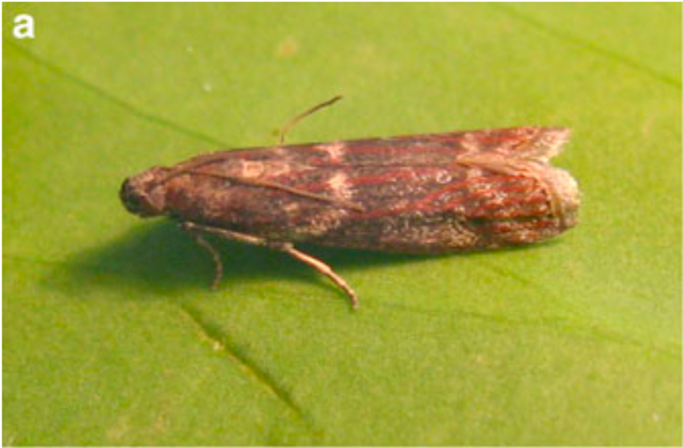
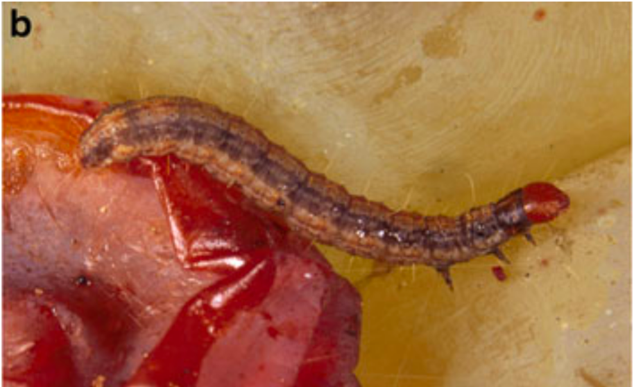
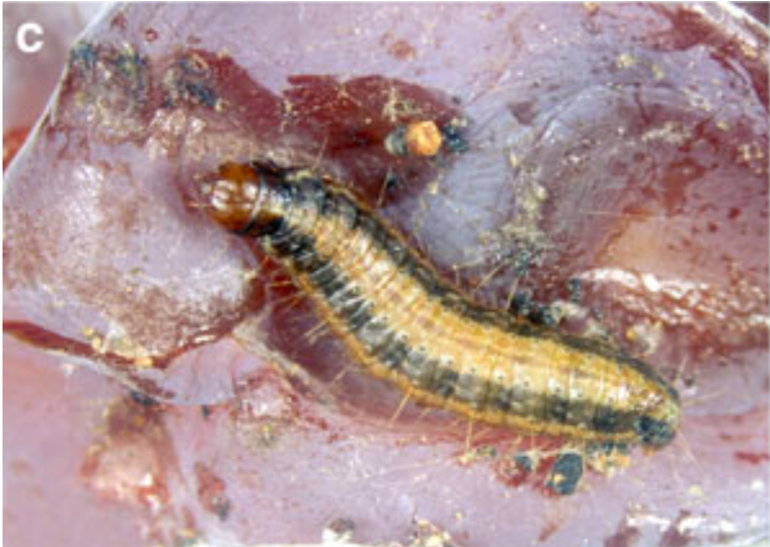

Projet Cryptovigne
Cryptovigne est un projet portant sur la pyrale du daphné, Cryptoblabes gnidiella, coordonné par Nicolas Constant (IFV, Rodilhan). Le CBGP intervient dans trois volets de ce projet :
Fiabiliser l’identification de C. gnidiella à tous les stades de son développement (Figure 1) (Jean-Claude Streito, Eric Pierre, Guénaëlle Genson)
Etude de la dynamique des populations, de la dispersion et de la migration par la génétique des populations (Carole Kerdelhué, Nathalie Gauthier, Réjane Streiff)
Modélisation de l’aire de distribution potentielle de C. gnidiella dans les conditions climatiques actuelles et futures (2050) (Jean-Pierre Rossi)
- Distribution potentielle dans les conditions climatiques actuelles
- Evolution possible selon différents scénarios de changement climatique
Cryptoblabes gnidiella, la pyrale du daphné



Figure 1. La pyrale du daphné Cryptoblabes gnidiella. (a) adulte, (b) jeune larve, (c) larve mature (photo Ioriatti et al 2012).
Cryptoblabes gnidiella est un ravageur secondaire de la vigne (Millière, 1867) réparti largement dans la région méditerranéenne. L’espèce est également signalée en Malaisie, en Nouvelle-Zélande, à Hawaï, dans certains pays africains et asiatiques, ainsi que dans de nombreuses régions tropicales et subtropicales d’Amérique du Nord et du Sud. C. gnidiella est une espèce assez fréquente qui occasionne des dégâts importants sur la vigne dans les zones littorales d’Italie, de France et d’autres pays de la région méditerranéenne. En France, les dégâts causés au vignoble sont donc importants dans le sud du pays. L’espèce se développe principalement sur les raisins en cours de maturation, entraînant une dégradation progressive des grappes.
Plantes hôtes. C. gnidiella est un insecte polyphage se développant sur 60 espèces végétales réparties dans 30 familles botaniques incluant Actinidia deliciosa, Citrus spp., Daphne spp., Daucus carota, Diospyros kaki, Eriobotrya japonica, Gossypium herbaceum, Malus spp., Persea americana, Prunus spp., Pyrus spp., Ricinus communis, Tamarix spp., et Vitis spp.. C. gnidiella est souvent associée à d’autres insectes tels que des lépidoptères (L. botrana) ou des hémiptères (pucerons et pseudococcidés) qui produisent du miellat consommé par les larves de la pyrale du daphné. C’est la raison pour laquelle C. gnidiella porte le nom commun de « honeydew moth » en anglais.
Cycle de vie C. gnidiella fait plusieurs générations par an dans les régions du bassin méditerranéen. Ce chiffre dépend de la température et varie donc avec l’altitude et la latitude. Bagnoli & Lucchi (2001) signalent ainsi qu’en Toscane, on rencontre fréquemment des niveaux de populations très élevés dans les vignobles côtiers du sud de la région, mais que l’espèce est quasi-absente par ailleurs. Le premier vol a lieu en mai ou juin, il peut être suivi de trois autres périodes de vol en juillet, août-septembre et en octobre-novembre. On a observé jusqu’à 7 générations sur des raisins et des agrumes en Israël. (Avidov et Harpaz 1969 cité dans Ioriatti et al 2012). Dans les régions viticoles du nord-est du Brésil, où les conditions climatiques permettent deux récoltes annuelles, C. gnidiella peut avoir jusqu’à neuf générations par an (Bisotto-de-Oliveira et al. 2007). C. gnidiella passe l’hiver au stade larvaire et se nymphose au début du printemps dans un cocon soyeux de couleur blanchâtre (Lucchi et al. 2019). Le seuil de température minimale requis pour passer du stade œuf au stade adulte a été estimé par Ringenberg et al. (2005) à 12,26 °C et 569,91 degrés-jours. En se basant sur ces valeurs, Öztürk (2018) a calculé que l’installation des pièges à phéromones peut être calée sur les dates auxquelles on atteint 80 degrés-jours. De la même manière, on peut prévoir l’éclosion des œufs lorsque le seuil des 250 degrés-jours est atteint tandis qu’il faut arriver à 800, 1375, 1930 et 2500 degrés-jours pour la seconde, troisième, quatrième et cinquième génération. Il faut garder à l’esprit que ces données concernent des populations se développant dans une plantation de grenade dans la province turque de Mersin et que les seuils valables pour des populations de l’ouest du bassin méditerranéen pourraient être différents. Vidart et al. (2013) réalisent le même type d’analyse en Uruguay et considèrent que les modèles logistiques obtenus constituent des outils acceptables pour gérer les populations de ce ravageur.
Distribution géographique
Nous l’avons vu plus haut, C. gnidiella est distribuée sur le pourtour méditerranéen ainsi que dans plusieurs pays au climat relativement semblable. Pour autant, les données d’occurrence disponibles dans la littérature et dans les bases de données telles que GBIF sont relativement peu nombreuses. Les données d’occurrences correspondent à des localités où l’espèce étudiée se maintient sous la forme d’une population viable (point de présence) ou, au contraire, ne peut pas se maintenir car les conditions ne sont pas favorables (point d’absence). Dans certains cas, on observe l’espèce, mais elle ne se reproduit pas et on parle alors de populations transitoires. Lorsque l’on construit des modèles statistiques reliant le climat aux points de présence, il est très important d’écarter les populations transitoires des calculs de façon à ne considérer que les cas où le climat permet la survie de l’espèce. De tels modèles sont appelés modèles d’aire de distribution ou modèles de niche écologique.
L’un des objectifs du projet Cryptovigne est d’établir un modèle d’aire de distribution pour C. gnidiella. Un modèle de ce type a été publié récemment (Zumbado-Ulate et al. 2023) et nous reproduisons ci-dessous la carte obtenue par ces auteurs (Figure 2). On observe que les occurrences européennes sont rares et que leur distribution est étrange : les points situés en Angleterre et en Belgique posent problème ! En effet, C. gnidiella est parfois observée dans ces pays, mais n’y constitue jamais de populations viables. Ceci est bien documenté pour la Belgique dans Meert (2020) et Dawidowicz et Rozwałka (2016) fournissent un autre exemple dans le cas de la Pologne. Le climat des régions du nord de l’Europe est défavorable et les observations qui y sont réalisées, quoique valides d’un point de vue taxonomique, ne doivent pas être retenues pour le travail de modélisation. La figure 2 représente la favorabilité du climat estimée par le modèle de Zumbado-Ulate et ses collègues. On s’attend à ce que cet indice soit élevé autour du bassin méditerranéen, mais ce n’est pas le cas ce qui indique que le modèle produit des projections très éloignées des connaissances dont nous disposons. Le problème peut s’expliquer de plusieurs façons, notamment par l’utilisation des populations transitoires lors des calculs. En tout état de cause, il est indispensable de faire un nouveau modèle et pour cela, il nous faut rassembler le plus grand nombre d’observations possible. Le projet Cryptovigne permettra de recueillir ces données pour la France et nous y ajouterons les informations collectées ailleurs dans le monde. Ce travail a débuté et les premiers résultats sont exposés dans le paragraphe suivant.
Figure 2. Occurrences connues et favorabilité climatique pour Cryptoblabes gnidiella. Reproduit de Zumbado-Ulate et al. (2023) figure S6.
Compilation des données d’occurences
Nous avons interrogé la base de données GBIF et extrait les données concernant C. gnidiella (GBIF Occurrence Download 2024). Certains pays dans lesquels l’espèce est signalée ne sont pas représentés dans GBIF (par exemple la Turquie ou l’Egypte) et il faut donc rechercher les informations disponibles dans la littérature. Les références bibliographiques compilées à cette occasion sont listées plus bas et le résultat de ces recherches est représenté sous la forme de la carte ci-dessous.
Figure 3. Cartographie interactive des occurrences disponibles dans la base de données GBIF (GBIF Occurrence Download 2024) et recueillies dans la littérature. Les populations du nord de l’Europe sont considérées comme transitoires.
La littérature disponible pour C. gnidiella est malheureusement assez limitée et de nombreux articles ne fournissent pas d’informations précises sur les localités où l’espèce a été observée. Après examen d’environ 200 publications, on ne dispose que de peu d’informations précises pour l’Asie (Malaisie). On peut prendre connaissance de la source des informations en passant le curseur sur les symboles indiquant la position des observations (Figure 3). Les points indiquant “BOLD” correspondent à des données génétiques de type barcode présentes dans GBIF et communiquées via la base de données BOLD. Cette information est importante, car elle indique des occurrences qui ne sont pas forcément basées sur une observation directe de C. gnidiella.
En conclusion, on peut souligner la difficulté posée par la petite taille des jeux de données disponibles et l’attention qu’il faudra porter aux populations transitoires ou ne correspondant qu’à un barcode.Références citées
Bagnoli, B., Lucchi, A., 2001. Bionomics of Cryptoblabes gnidiella (Millière)(Pyralidae Phycitinae) in Tuscan vineyards. IOBC wprs Bulletin 24, 79–84.
Bisotto-De-Oliveira, R., Redaelli, L.R., Sant’Ana, J., Cover, C., Botton, M., 2007. Ocurrence of Cryptoblabes gnidiella (Milliere) (Lepidoptera: Pyralidae) associated with grape phenology in Bento Goncalves, RS. NEOTROPICAL ENTOMOLOGY 36, 555–559. https://doi.org/10.1590/S1519-566X2007000400013
Dawidowicz, Ł., Rozwałka, R., 2016. Honeydew Moth Cryptoblabes gnidiella (MILLIÈRE, 1867) (Lepidoptera: Pyralidae): an adventive species frequently imported with fruit to Poland. Polish Journal of Entomology 85, 181–189. https://doi.org/10.1515/pjen-2016-0010
GBIF Occurrence Download (2024) https://doi.org/10.15468/dl.a4fjk5 Accessed from R via rgbif (https://github.com/ropensci/rgbif) on 2024-09-16”
Ioriatti, C., Lucchi, A., Varela, L.G., 2012. Grape berry moths in Western European Vineyards and their recent movement into the new world. Grape Berry Moths in Western European Vineyards and Their Recent Movement into the New World. https://doi.org/10.1007/978-94-007-4032-7
Lucchi, A., Ricciardi, R., Benelli, G., Bagnoli, B., 2019. What do we really know on the harmfulness of Cryptoblabes gnidiella (Milliere) to grapevine? From ecology to pest management. PHYTOPARASITICA 47, 1–15. https://doi.org/10.1007/s12600-018-0705-3
Meert, R., 2020. Cryptoblabes gnidiella (Lepidoptera: Pyralidae) voor het eerst in België vastgesteld. Phegea 48, 90–93.
Ozturk, N., 2018. Creating a degree-day model of honeydew moth [Cryptoblabes gnidiella (Mill., 1867) (Lepidoptera: Pyralidae)] in pomegranate orchards. TURKIYE ENTOMOLOJI DERGISI-TURKISH JOURNAL OF ENTOMOLOGY 42, 53–62. https://doi.org/10.16970/entoted.362264
Vidart, M.V., Mujica, M.V., Calvo, M.V., Duarte, F., Bentancourt, C.M., Franco, J., Scatoni, I.B., 2013. Relationship between male moths of Cryptoblabes gnidiella (Millière) (Lepidoptera: Pyralidae) caught in sex pheromone traps and cumulative degree-days in vineyards in southern Uruguay. SpringerPlus 2, 258. https://doi.org/10.1186/2193-1801-2-258
Zumbado-Ulate, H., Schartel, T.E., Simmons, G.S., Daugherty, M.P., 2023. Assessing the risk of invasion by a vineyard moth pest guild. NEOBIOTA 86, 169–191. https://doi.org/10.3897/neobiota.86.100579Liste complète des publications compilées dans le cadre de Cryptovigne
- Abdel Kareim, A., Ragab, M., Ghanim, N., Abd El-Salam, S., 2018. Seasonal Activity, Natural Enemies and Life Table Parameters of Cryptoblabes gnidiella Mill. on Mango Inflorescences. Journal of Plant Protection and Pathology 9, 393–397. https://doi.org/10.21608/jppp.2018.42181
- Abdel-Moaty, R., Hashim, S., Tadros, A., 2017. Monitoring the Honeydew Moth, Cryptoblabes gnidiella Millière (Lepidoptera: Pyralidae) in Pomegranate Orchards in the Northwestern Region of Egypt. Journal of Plant Protection and Pathology 8, 505–509.
- Abouziena, H.F., El-Saeid, H.M., 2013. Developmental changes in growth, yield and volatile oil of some Chinese garlic lines in comparison with the local cultivar “Balady.” Pakistan Journal of Biological Sciences. https://doi.org/10.3923/pjbs.2013.1138.1144
- Afromoths.net [WWW Document], n.d. URL https://www.afromoths.net/ (accessed 9.16.24).
- Ahmed, A.R., Apori, S.O., Karim, A.A., 2023. Mealybug vectors: A review of their transmission of plant viruses and their management strategies. AIMS Agriculture and Food. https://doi.org/10.3934/AGRFOOD.2023040
- Alloui-Griza, R., Cherif, A., Attia, S., Francis, F., Lognay, G.C., Grissa-Lebdi, K., 2022. Lethal Toxicity of Thymus capitatus Essential Oil Against Planococcus citri (Hemiptera: Pseudococcidae) and its Coccinellid Predator Cryptolaemus montrouzieri (Coleoptera: Coccinellidae). Journal of Entomological Science. https://doi.org/10.18474/JES21-81
- ANNEXE 1 1. Descriptif technique 2024 1. Cryptovigne.pdf, n.d.
- Anshelevich, L., Kehat, M., Dunkelblum, E., Greenberg, S., 1994. Sex Pheromone Traps for Monitoring the European Vine Moth, Lobesia botrana: Effect of Dispenser Type, Pheromone Dose, Field Aging of Dispenser, and Type of Trap on Male Captures. Phytoparasitica. https://doi.org/10.1007/BF02980529
- Aranda-Arguello, R., Rojas, J.C., Malo, E.A., López-Guillén, G., Cruz-López, L., 2022. Male attraction of Gymnandrosoma aurantianum (Lepidoptera: Tortricidae), from Guatemala, to its sex pheromone major component is not affected by the addition of secondary components. Canadian Entomologist. https://doi.org/10.4039/tce.2022.37
- Argov, Y., Gerson, U., 2012. Gracillariidae, yponomeutidae and pyralidae. Integrated Control of Citrus Pests in the Mediterranean Region. https://doi.org/10.2174/978160805294311201010223
- ASCHER, K., ELIYAHU, M., GUREVITZ, E., RENNEH, S., 1983. REARING THE HONEYDEW MOTH, CRYPTOBLABES-GNIDIELLA, AND THE EFFECT OF DIFLUBENZURON ON ITS EGGS. PHYTOPARASITICA 11, 195–198. https://doi.org/10.1007/BF02980691
- Avidov, Z., Gothilf, S., 1960. Observations on the honeydew moth (Gryptoblabes gnidiella Milliere) in Israel. I. Biology, phenology and economic importance. Ktavim 10, 109–124.
- Avidov, Z., Harpaz, I., 1969. Plant pests of Israel.
- Bagnoli, B., Lucchi, A., 2001. Bionomics of Cryptoblabes gnidiella (Millière)(Pyralidae Phycitinae) in Tuscan vineyards. IOBC wprs Bulletin 24, 79–84.
- Barker, B., n.d. Forecasting phenology and establishment risk of invasive species to support early detection.
- Bavaresco, A., Nuñez, S., Garcia, M.S., Botton, M., Sant’Ana, J., 2005. Attraction of males of the South American tortricid moth Argyrotaenia sphaleropa (Meyrick) (Lepidoptera: Tortricidae) to the components of the synthetic sexual pheromone in persimmon; [Atração de machos da lagarta-das-fruteiras Argyrotaenia sphaleropa (Meyrick) (Lepidoptera: Tortricidae) aos componentes do feromônio sexual sintético na cultura do caquizeiro]. Neotropical Entomology. https://doi.org/10.1590/S1519-566X2005000400013
- Benelli, G., Lucchi, A., 2021. From insect pheromones to mating disruption: Theory and practice. Insects. https://doi.org/10.3390/insects12080698
- Benelli, G., Lucchi, A., Anfora, G., Bagnoli, B., Botton, M., Campos-Herrera, R., Carlos, C., Daugherty, M.P., Gemeno, C., Harari, A.R., Hoffmann, C., Ioriatti, C., López Plantey, R.J., Reineke, A., Ricciardi, R., Roditakis, E., Simmons, G.S., Tay, W.T., Torres-Vila, L.M., Vontas, J., Thiéry, D., 2023. European grapevine moth, Lobesia botrana Part I: Biology and ecology. Entomologia Generalis. https://doi.org/10.1127/entomologia/2023/1837
- Benelli, G., Lucchi, A., Thomson, D., Ioriatti, C., 2019. Sex pheromone aerosol devices for mating disruption: Challenges for a brighter future. Insects. https://doi.org/10.3390/insects10100308
- BENYEHUDA, S., WYSOKI, M., ROSEN, D., 1993. LABORATORY EVALUATION OF MICROBIAL PESTICIDES AGAINST THE HONEYDEW MOTH. INSECT SCIENCE AND ITS APPLICATION 14, 627–630.
- Bhadauriya, A.P.S., Chauhan, A.K.S., Chandel, B.S., n.d. Studies on the life cycle of Cryptoblabes gnidiella miller (Lepidoptera: Pyralidae) on hybrid sorghum.
- Bisotto-De-Oliveira, R., Redaelli, L.R., Sant’Ana, J., Cover, C., Botton, M., 2007. Ocurrence of Cryptoblabes gnidiella (Milliere) (Lepidoptera: Pyralidae) associated with grape phenology in Bento Goncalves, RS. NEOTROPICAL ENTOMOLOGY 36, 555–559. https://doi.org/10.1590/S1519-566X2007000400013
- Bjostad, L.B., Gurevitz, E., Gothilf, S., Roelofs, W.L., 1981. Sex attractant for the honeydew moth,Cryptoblabes gnidiella. Phytoparasitica 9, 95–99. https://doi.org/10.1007/bf03158451
- Blumberg, D., Navon, A., Keren, S., Goldenberg, S., Ferkovich, S.M., 1997. Interactions among Helicoverpa armigera (Lepidoptere: Noctuidae), Its Larval Endoparasitoid Microplitis croceipes (Hymenoptera: Braconidae), and Bacillus thuringiensis. Journal of Economic Entomology. https://doi.org/10.1093/jee/90.5.1181
- Bodenheimer, F.S., others, 1951. Citrus entomology in the Middle East.
- Chandel, B., Bhadauriya, A., Chauhan, A., 2010. Relative toxicity of certain insecticides against larvae of earhead caterpillar, Cryptoblabes gnidiella Milliere (Lepidoptera: Pyralidae). J. Env. Bio-Sci 24, 95–98.
- Chikkarugi, N.M., Vijaykumar, L., Raveendra, H.R., Shivanna, B., Navi, S., Kitturmath, M.S., 2023. Resistance to Earhead Caterpillars in Finger Millet. ije. https://doi.org/10.55446/ije.2023.628
- Cocuzza, G.E.M., Mazzeo, G., Russo, A., Giudice, V.L., Bella, S., 2016. Pomegranate arthropod pests and their management in the Mediterranean area. Phytoparasitica. https://doi.org/10.1007/s12600-016-0529-y
- Cortes, J.M.R., Franco, J.C., n.d. Comparação de dois tipos de armadilhas para monitorização de Cryptoblabes gnidiella.
- Cryptoblabes gnidiella (CRYBGN)[Overview]| EPPO Global Database [WWW Document], n.d. URL https://gd.eppo.int/taxon/CRYBGN (accessed 9.16.24).
- Cryptoblabes, qui es-tu ? 1 [WWW Document], n.d. URL http://www.fmcagro.fr/fr/nos-expertises/connaitre-les-ravageurs-des-cultures/cryptobables-gnidiella/index.htm (accessed 9.16.24).
- Cryptoblabes, qui es-tu ? CapTrap.pdf, n.d.
- Cryptoblabes, qui es-tu ? Cycle.pdf, n.d.
- Cryptoblabes, qui es-tu ? doc.pdf, n.d.
- da Costa-Lima, T.C., de Araújo, A.T.P., Torris, A.F., 2021. Biology and Population Dynamics of the American Vine Moth and the Potential Biocontrol with Trichogramma pretiosum. Neotropical Entomology. https://doi.org/10.1007/s13744-021-00850-w
- Dawidowicz, Ł., Rozwałka, R., 2016. Honeydew Moth Cryptoblabes gnidiella (MILLIÈRE, 1867) (Lepidoptera: Pyralidae): an adventive species frequently imported with fruit to Poland. Polish Journal of Entomology 85, 181–189. https://doi.org/10.1515/pjen-2016-0010
- de Morais Oliveira, J.E., de Araujo Fernandes, M.H., Gama, F. de C., Botton, M., Moreira de Carvalho, A.N., 2014. Using the technique of mating disruption for Cryptoblabes gnidiella (Lepidoptera: Pyralidae) population management on grapevine. PESQUISA AGROPECUARIA BRASILEIRA 49, 853–859. https://doi.org/10.1590/S0100-204X2014001100004
- de Pedro, L., Beitia, F., Sabater-Muñoz, B., Asís, J.D., Tormos, J., 2016. Effect of temperature on the developmental time, survival of immatures and adult longevity of Aganaspis daci (Hymenoptera: Figitidae), a natural enemy of Ceratitis capitata (Diptera: Tephritidae). Crop Protection. https://doi.org/10.1016/j.cropro.2016.03.010
- Demirel, N., 2016. Seasonal flight patterns of the honeydew moth, Cryptoblabes gnidiella Millière (Lepidoptera: Pyralidae) in pomegranate orchards as observed using pheromone traps.
- Dominguez, A., Puigmartĺ, M., Bosch, M.P., Rosell, G., Crehuet, R., Ortiz, A., Quero, C., Guerrero, A., 2016. Synthesis, Functional Assays, Electrophysiological Activity, and Field Tests of Pheromone Antagonists of the Tomato Leafminer, Tuta absoluta. Journal of Agricultural and Food Chemistry. https://doi.org/10.1021/acs.jafc.6b00674
- DUFFY, B., GARDNER, D., 1994. LOCALLY ESTABLISHED BOTRYTIS FRUIT ROT OF MYRICA-FAYA, A NOXIOUS WEED IN HAWAII. PLANT DISEASE 78, 919–923. https://doi.org/10.1094/PD-78-0919
- Dunkelblum, E., Levi-Zada, A., 2017. Pheromone Research and Development in Israel 1975–2015. Phytoparasitica. https://doi.org/10.1007/s12600-017-0617-7
- Dunkelblum, E., Mendel, Z., Gries, G., Gries, R., Zegelman, L., Hassner, A., Mori, K., 1996. Antennal response and field attraction of the predator Elatophilus hebraicus (Hemiptera: Anthocoridae) to sex pheromones and analogues of three Matsucoccus spp. (Homoptera: Matsucoccidae). Bioorganic and Medicinal Chemistry. https://doi.org/10.1016/0968-0896(96)00030-2
- Elekcioglu, N.Z., Olculu, M., n.d. Pest, predator and parasitoid species in persimmon orchards in the eastern Mediterranean region of Turkey, with new records. Fresenius Environmental Bulletin 26.
- El-Gepaly, H., El-Khayat, E., Omran, N., Desoky, A., 2021. Effect of Pest Control Applications on Sorghum-Panicle Pests and Associated Predators at Sohag Governorate, Egypt. Journal of Plant Protection and Pathology 12, 639–645. https://doi.org/10.21608/jppp.2021.208008
- El-Gepaly, H.M.K.H., 2019. Insect fauna of pests and their natural enemies inhabiting sorghum-panicles in Egypt. EGYPTIAN JOURNAL OF BIOLOGICAL PEST CONTROL 29. https://doi.org/10.1186/s41938-019-0190-0
- El-Husseini, M.M., El-Heneidy, A.H., Awadallah, K.T., 2018. Natural enemies associated with some economic pests in egyptian agro-ecosystems. Egyptian Journal of Biological Pest Control. https://doi.org/10.1186/s41938-018-0081-9
- Farahpour-Haghani, A., Hassanpour, M., Alinia, F., Nouri-Ganbalani, G., Razmjou, J., Agassiz, D., 2017. Water ferns Azolla spp. (Azollaceae) as new host plants for the small China-mark moth, Cataclysta lemnata (Linnaeus, 1758) (Lepidoptera, Crambidae, Acentropinae). Nota Lepidopterologica. https://doi.org/10.3897/nl.40.10062
- Franco, J.C., Suma, P., Da Silva, E.B., Blumberg, D., Mendel, Z., 2004. Management strategies of mealybug pests of citrus in mediterranean countries. Phytoparasitica. https://doi.org/10.1007/BF02980445
- Franco, J.C., Zada, A., Mendel, Z., 2009. Novel approaches for the management of mealybug pests. Biorational Control of Arthropod Pests: Application and Resistance Management. https://doi.org/10.1007/978-90-481-2316-2_10
- Gahukar, R.T., 1989. Insect pests of millets and their management: A review. Tropical Pest Management. https://doi.org/10.1080/09670878909371411
- Galán, A.J., Martín, A., Torres-Vila, L.M., Ruiz-Moyano, S., Galván, A.I., Serradilla, M.J., López-Corrales, M., 2023. Quantification and identification of damage caused by pests and fungi in dried figs from orchards with different levels of agronomic management in the main production areas of extremadura (SW Spain). Crop Protection. https://doi.org/10.1016/j.cropro.2023.106334
- gggGGGGG, n.d.
- Grosscurt, A.C., Wixley, R.A.J., 1991. Effects of temperature on acaricidal and insecticidal activities of the benzoylureas flucycloxuron and diflubenzuron. Entomologia Experimentalis et Applicata. https://doi.org/10.1111/j.1570-7458.1991.tb01508.x
- Hagstrum, D.W., Subramanyam, B., 2009. Stored-Product Insect Resource. Stored-Product Insect Resource.
- Harari, A.R., Zahavi, T., Gordon, D., Anshelevich, L., Harel, M., Ovadia, S., Dunkelblum, E., 2007. Pest management programmes in vineyards using male mating disruption. PEST MANAGEMENT SCIENCE 63, 769–775. https://doi.org/10.1002/ps.1365
- Harpaz, I., Wysoki, M., 1984. Susceptibility of the carob moth, Ectomyelois ceratoniae, to Bacillus thuringiensis. Phytoparasitica. https://doi.org/10.1007/BF02981172
- Hashim, S., El-Moaty, A., Tadros, A., others, 2017. Alternative non-conventional and environmentally safe horticultural, mechanical and local treatments to control Cryptoblabes gnidiella Millière (Lepidoptera: Pyralidae) in pomegranate orchards in the Northwestern Region of Egypt. Journal of Plant Protection and Pathology 8, 511–515.
- Heckford, R.J., Sterling, P.H., 2004. Notes on, and descriptions of, some larvae of Oecophoridae, Gelechiidae and Pyralidae (Lepidoptera). Entomologist’s Gazette.
- Henderson, P.A., 2021. Southwood’s ecological methods. Southwood’s Ecological Methods. https://doi.org/10.1093/oso/9780198862277.001.0001
- Hight, S.D., Bloem, S., Bloem, K.A., Carpenter, J.E., 2003. Cactoblastis cactorum (Lepidoptera: Pyralidae): Observations of courtship and mating behaviors at two locations on the Gulf Coast of Florida. Florida Entomologist. https://doi.org/10.1653/0015-4040(2003)086[0400:CCLPOO]2.0.CO;2
- Hinton, H.E., 2013. Biology of Insect Eggs. Biology of Insect Eggs. https://doi.org/10.1016/C2013-1-15220-3
- Hinton, H.E., 1943. The Larvae of the Lepidoptera associated with stored Products. Bull. Entomol. Res. 34, 163–212. https://doi.org/10.1017/s0007485300023701
- Ioriatti, C., Anfora, G., Bagnoli, B., Benelli, G., Lucchi, A., 2023. A review of history and geographical distribution of grapevine moths in Italian vineyards in light of climate change: Looking backward to face the future. CROP PROTECTION 173. https://doi.org/10.1016/j.cropro.2023.106375
- Ioriatti, C., Lucchi, A., Varela, L.G., 2012. Grape berry moths in Western European Vineyards and their recent movement into the new world. Grape Berry Moths in Western European Vineyards and Their Recent Movement into the New World. https://doi.org/10.1007/978-94-007-4032-7
- ISHAAYA, I., GUREVITZ, E., ASCHER, K., 1983. SYNTHETIC PYRETHROIDS AND AVERMECTIN FOR CONTROLLING THE GRAPEVINE PESTS LOBESIA-BOTRANA, CRYPTOBLABES-GNIDIELLA AND DROSOPHILA-MELANOGASTER. PHYTOPARASITICA 11, 161–166. https://doi.org/10.1007/BF02980687
- Ishaaya, I., Navon, A., Gurevitz, E., 1986. Comparative toxicity of chlorfluazuron (IKI-7899) and cypermethrin to Spodoptera littoralis, Lobesia botrana and Drosophila melanogaster. Crop Protection. https://doi.org/10.1016/0261-2194(86)90069-4
- Izhar, Y., Wysoki, M., Gur, L., 1979. The effectiveness of Bacillus thuringiensis Berliner on Boarmia (Ascotis) Selenaria Schiff. (Lepidoptera, Geometridae) in laboratory tests and field trials. Phytoparasitica. https://doi.org/10.1007/BF02981579
- Jager, K. de, Daneel, M., 1999. Protect banana bunches against pests with bags. Neltropika Bulletin 305, 32–33.
- Jervis, M.A., 2005. Insects as natural enemies: A practical perspective. Insects As Natural Enemies: A Practical Perspective. https://doi.org/10.1007/978-1-4020-2625-6
- Jervis, M.A., Copland, M.J.W., Shameer, K.S., Harvey, J.A., 2023. The Life-Cycle. Jervis’s Insects as Natural Enemies: Practical Perspectives. https://doi.org/10.1007/978-3-031-23880-2_2
- Johnson, T.L., Elgar, M.A., Symonds, M.R.E., 2022. Movement and olfactory signals: Sexually dimorphic antennae and female flightlessness in moths. Frontiers in Ecology and Evolution. https://doi.org/10.3389/fevo.2022.919093
- Kalaisekar, A., Padmaja, P.G., Bhagwat, V.R., Patil, J.V., 2017. Insect Pests of Millets: Systematics, Bionomics, and Management. Insect Pests of Millets: Systematics, Bionomics, and Management.
- Karsholt, O., Razowski, J., 1996. The Lepidoptera of Europe: a distributional checklist. Apollo books, Stenstrup.
- Karuppaiah, V., Chaware, G.G., Soumia, P.S., Singh, M., 2023. A CHECKLIST OF INSECT PESTS OF ONION. Indian Journal of Entomology. https://doi.org/10.55446/IJE.2021.364
- Keçeci̇, M., 2021. The population dynamic of honeydew moth [Cryptoblabes gnidiella Mill. (Lepidoptera: Pyralidae)] in vineyard in Antalya. Mediterranean Agricultural Sciences 34, 169–173. https://doi.org/10.29136/mediterranean.821101
- Kehat, M., Anshelevich, L., Dunkelblum, E., Fraishtat, P., Greenberg, S., 1994a. Sex pheromone traps for monitoring the codling moth: effect of dispenser type, field aging of dispenser, pheromone dose and type of trap on male captures. Entomologia Experimentalis et Applicata. https://doi.org/10.1111/j.1570-7458.1994.tb01758.x
- Kehat, M., Anshelevich, L., Dunkelblum, E., Greenberg, S., 1994b. Sex Pheromone Traps for Monitoring the Peach Twig Borer, Anarsia lineatella Zeller: Effect of Pheromone Components, Pheromone Dose, Field Aging of Dispenser, and Type of Trap on Male Captures. Phytoparasitica. https://doi.org/10.1007/BF02980530
- Khalaim, A.I., Ruíz-Cancino, E., 2021. Darwin wasps of the subfamily Pimplinae (Hymenoptera: Ichneumonidae) of Mexico: genera Apechthis Förster, Itoplectis Förster and Pimpla Fabricius. Zootaxa. https://doi.org/10.11646/zootaxa.5071.4.1
- Kim, D.-S., Lee, J.-H., 2011. A novel approach to the assessment of fruit damage caused by Carposina sasakii (Lepidoptera: Carposinidae) using pheromone trap catches in Korean orchards. Applied Entomology and Zoology. https://doi.org/10.1007/s13355-010-0022-x
- Korashy, M.A., 2001. Seasonal fluctuation in the population of Cryptoblabes gnidiella millar in mango, grapevine and citrus orchards. Egyptian Journal of Agricultural Research 79, 1379–1386. https://doi.org/10.21608/ejar.2001.320894
- Kovanci, O.B., Schal, C., Walgenbach, J.F., Kennedy, G.G., 2006. Effects of pheromone loading, dispenser age, and trap height on pheromone trap catches of the oriental fruit moth in apple orchards. Phytoparasitica. https://doi.org/10.1007/BF02980952
- Kruger, M., 1998. Identification of the adults of Lepidoptera inhabiting Ravenelia macowaniana Pazschke (Uredinales) galls on Acacia karroo Hayne (Fabaceae) in southern Africa. AFRICAN ENTOMOLOGY 6, 55–74.
- Lasota, J.A., Dybas, R.A., 1991. Avermectins, a novel class of compounds: Implications for use in arthropod pest control. Annual Review of Entomology. https://doi.org/10.1146/annurev.en.36.010191.000515
- Legua, P., Martinez-Nicolas, J.J., Guirao, P., Hernandez, F., Nunez-Gomez, D., Melgarejo, P., 2022. Influence of fruit bagging technique on the morphometric and biochemical characteristics of two pomegranate varieties (Punica granatum L.). FOOD CHEMISTRY: MOLECULAR SCIENCES 4. https://doi.org/10.1016/j.fochms.2022.100112
- Lessio, F., Alma, A., 2021. Models Applied to Grapevine Pests: A Review. INSECTS 12. https://doi.org/10.3390/insects12020169
- Loni, A., Samartsev, K.G., Scaramozzino, P.L., Belokobylskij, S.A., Lucchi, A., 2016. Braconinae parasitoids (Hymenoptera, Braconidae) emerged from larvae of Lobesia botrana (Denis & Schiffermuller) (Lepidoptera, Tortricidae) feeding on Daphne gnidium L. ZOOKEYS 125–150. https://doi.org/10.3897/zookeys.587.8478
- Lopez-Vaamonde, C., Sire, L., Rasmussen, B., Rougerie, R., Wieser, C., Allaoui, A.A., Minet, J., DeWaard, J.R., Decaëns, T., Lees, D.C., 2019. DNA barcodes reveal deeply neglected diversity and numerous invasions of micromoths in Madagascar. Genome. https://doi.org/10.1139/gen-2018-0065
- Lucchi, A., Botton, M., Bagnoli, B., 2011. Tignola rigata su vite da tenere sotto controllo. L’Informatore Agrario 31, 65–69.
- Lucchi, A., Ricciardi, R., Benelli, G., Bagnoli, B., 2019. What do we really know on the harmfulness of Cryptoblabes gnidiella (Milliere) to grapevine? From ecology to pest management. PHYTOPARASITICA 47, 1–15. https://doi.org/10.1007/s12600-018-0705-3
- Luo, Z.X., Li, Z.Q., Cai, X.M., Bian, L., Chen, Z.M., 2017. Evidence of Premating Isolation between Two Sibling Moths: Ectropis grisescens and Ectropis obliqua (Lepidoptera: Geometridae). Journal of Economic Entomology. https://doi.org/10.1093/jee/tox216
- Machota, R., Bortoli, L.C., Cavalcanti, F.R., Botton, M., Grützmacher, A.D., 2016. Assessment of Injuries Caused by Anastrepha fraterculus (Wied.) (Diptera: Tephritidae) on the Incidence of Bunch Rot Diseases in Table Grape. Neotropical Entomology. https://doi.org/10.1007/s13744-016-0377-y
- Mani, M., 2016. Fruit crops: Avocado. Mealybugs and their Management in Agricultural and Horticultural Crops. https://doi.org/10.1007/978-81-322-2677-2_44
- Martinez-Sañudo, I., Mazzon, L., Vecchia, P.D., Bagnoli, B., Lucchi, A., Marchesini, E., Mori, N., n.d. Pyralidae Phycitinae in Italian vineyards: behavioural and molecular genetic investigations.
- Masier, S., Taudière, A., Roy, L.J.M., Carrasco, D., Barnagaud, J.-Y., Planchon, C., Soulié, A.-S., Sleeckx, N., Roy, L., 2023. High-throughput behavioral phenotyping of tiny arthropods: Chemosensory traits in a mesostigmatic hematophagous mite. Journal of Experimental Zoology Part A: Ecological and Integrative Physiology. https://doi.org/10.1002/jez.2651
- McQuate, G., Follett, P., Yoshimoto, J., 2000. Field infestation of rambutan fruits by internal-feeding pests in Hawaii. Journal of Economic Entomology 93, 846–851. https://doi.org/10.1603/0022-0493-93.3.846
- Meert, R., 2020. Cryptoblabes gnidiella (Lepidoptera: Pyralidae) voor het eerst in België vastgesteld. Phegea 48, 90–93.
- Mendel, Z., Avtabi, A., Cocuzza, G.E.M., 2023. Citron Arthropod Pests in the Mediterranean, Their Origin and Notes on Their Biology and Management. The Citron Compendium: The Citron (Etrog) Citrus medica L.: Science and Tradition. https://doi.org/10.1007/978-3-031-25775-9_6
- Mendel, Z., Blumberg, D., Ishaaya, I., 1991. Effect of Buprofezin on Icerya Purchasi and Planococcus Citri. Phytoparasitica. https://doi.org/10.1007/BF02980355
- Mineo, G., 2022. On citrus trees Lepidoptera and particularly on those inhabiting the Mediterranean area, in: Integrated Pest Control in Citrus Groves. CRC Press, pp. 127–134.
- Molet, T., 2013. CPHST Pest Datasheet for Cryptoblabes gnidiella.
- Molina, J., 1998. Lepidoptera associated with blueberry cultivation in Western Andalusia.
- Molnár, P.B., Bognár, C., Erdei, A.L., Fujii, T., Vági, P., Jósvai, J.K., Kárpáti, Z., 2018. Identification of the Female-Produced Sex Pheromone of an Invasive Greenhouse Pest, the European Pepper Moth (Duponchelia fovealis). Journal of Chemical Ecology. https://doi.org/10.1007/s10886-018-0928-2
- Mondani, L., Palumbo, R., Tsitsigiannis, D., Perdikis, D., Mazzoni, E., Battilani, P., 2020. Pest management and ochratoxin a contamination in grapes: A review. Toxins. https://doi.org/10.3390/toxins12050303
- Moore, S., 2003. The lemon borer moth: a new citrus pest in South Africa. SA Fruit Journal 2, 37–41.
- Neuenschwander, P., Hennessey, R.D., Herren, H.R., 1987. Food web of insects associated with the cassava mealybug, Phenacoccus manihoti Matile-Ferrero (Hemiptera: Pseudococcidae), and its introduced parasitoid, Epidinocarsis lopezi (De Santis) (Hymenoptera: Encyrtidae), in Africa. Bulletin of Entomological Research. https://doi.org/10.1017/S0007485300011664
- Neunzig, H., 1986. Pyraloidea, Pyralidae, Phycitinae.[in:] RB DOMINICK. The Moths of.
- Nm, C., L, V., Hr, R., B, S., R, K., 2021. Field efficacy of selected insecticide molecules against finger millet [Eleusine coracana (L.) Gaertn.,] earhead caterpillars. J. Entomol. Zool. Stud. 9, 911–915. https://doi.org/10.22271/j.ento.2021.v9.i1m.8261
- Ortu, S., 1982. osservazioni su Planococcus citri (Risso) nelle coltivazioni agrumicole della Sarolegna.
- Ozturk, N., 2018. Creating a degree-day model of honeydew moth [Cryptoblabes gnidiella (Mill., 1867) (Lepidoptera: Pyralidae)] in pomegranate orchards. TURKIYE ENTOMOLOJI DERGISI-TURKISH JOURNAL OF ENTOMOLOGY 42, 53–62. https://doi.org/10.16970/entoted.362264
- Öztürk, N., Ulusoy, M., 2011. Determination of hosts of Honeydew moth [Cryptoblabes gnidiella Mill., 1867 (Lepidoptera: Pyralidae)] and damage ratio on pomegranate fruits in the Eastern Mediterranean Region. Plant Protection Bulletin 51, 231–238.
- Öztürk, N., Ulusoy, M.R., 2013. Trabzon hurması (Diosppyros kaki L.) ve Mısır (Zea mays L.)’da Yeni Bir Zararlı, Portakal güvesi [Cryptoblabes gnidiella Mill.(Lepidoptera: Pyralidae)]. Tarım Bilimleri Araştırma Dergisi 6–9.
- Ozturk, N., Ulusoy, M.R., 2012. Determination of adult population dynamics and generation number of Honeydew moth [Cryptoblabes gnidiella Milliere., 1867 (Lepidoptera: Pyralidae)] in pomegranate orchards in the Eastern Mediterranean Region. TURKIYE ENTOMOLOJI DERGISI-TURKISH JOURNAL OF ENTOMOLOGY 36, 101–112.
- Öztürk, N., Ulusoy, M.R., 2012. Determination of adult population dynamics and generation number of Honeydew moth [Cryptoblabes gnidiella Milliere., 1867 (Lepidoptera: Pyralidae)] in pomegranate orchards in the Eastern Mediterranean Region; [Dogu Akdeniz Bölgesi nar bahçelerinde Portakal güvesi [Cryptoblabes gnidiella Milliere, 1867 (Lepidoptera: Pyralidae)]’nin ergin popülasyon degisimi ve döl sayisinin belirlenmesi]. Turkiye Entomoloji Dergisi.
- Paiva, P.E.B., Yamamoto, P.T., 2014. Citrus caterpillars, with an emphasis onHelicoverpa armigera:a brief review. Citrus Research & Technology 35. https://doi.org/10.5935/2236-3122.20140002
- Peri, E., Kapranas, A., 2012. Pseudococcidae and monophlebidae. Integrated Control of Citrus Pests in the Mediterranean Region. https://doi.org/10.2174/978160805294311201010172
- Pietrement, P., 2021. Étude de l’efficacité de différentes modalités de confusion sexuelle contre Lobesia botrana et Cryptoblabes gnidiella et étude des dynamiques de population au Domaine Cazes (Pyrénées-Orientales) (Master’s Thesis). Domaine Cazès, 4 rue Francisco Ferrer, 66600 Rivesaltes.
- Prasad, G.S., Babu, K.S., 2016. Insect Pest Resistance in Pearl Millet and Small Millets. Biotic Stress Resistance in Millets. https://doi.org/10.1016/B978-0-12-804549-7.00005-6
- Qiu, Z., Qiu, P., Zhu, Q., Wang, R., 2015. Insect trapping method based on progressive star network. International Journal of Online Engineering. https://doi.org/10.3991/ijoe.v11i9.5066
- Rabinowitch, H.D., 1997. Breeding alliaceous crops for pest resistance. Acta Horticulturae. https://doi.org/10.17660/actahortic.1997.433.23
- Ricciardi, R., De Fazi, L., D’Anna, G., Savino, F., Ladurner, E., Iodice, A., Benelli, G., Lucchi, A., 2024. Simultaneous mating disruption of two moth pests of the vineyard (Lobesia botrana and Cryptoblabes gnidiella) through a biodegradable sex pheromone dispenser. Environmental Science and Pollution Research. https://doi.org/10.1007/s11356-024-33980-w
- Ricciardi, R., Di Giovanni, F., Cosci, F., Ladurner, E., Savino, F., Iodice, A., Benelli, G., Lucchi, A., 2021. Mating Disruption for Managing the Honeydew Moth, Cryptoblabes gnidiella (Milliere), in Mediterranean Vineyards. INSECTS 12. https://doi.org/10.3390/insects12050390
- Ringenberg, R., Botton, M., Garcia, M., Nondillo, A., 2005. Compared biology in artificial diets and thermal requirements of Cryptoblabes gnidiella. PESQUISA AGROPECUARIA BRASILEIRA 40, 1059–1065. https://doi.org/10.1590/S0100-204X2005001100002
- Roberts, H., 1969. Forest insects of Nigeria with notes on their biology and distribution.
- Satar, G., Aslan, M.M., Kozanoglu, A., Usanmaz, H., 2020. Lepidoptera Species Harmful in Vineyard Areas in Mediterranean and Southeastern Anatolia Regions. KSU TARIM VE DOGA DERGISI-KSU JOURNAL OF AGRICULTURE AND NATURE 23, 898–903. https://doi.org/10.18016/ksutarimdoga.vi.672020
- Scatoni, I., Bentancourt, C., 1983. Cryptoblabes gnidiella (Millière): una nueva lagarta de los racimos en los viñedos de nuestro país. Revista de la AIA 1, 266–268.
- Search [WWW Document], n.d. URL https://www.gbif.org/species/1873051 (accessed 11.18.22).
- Sellanes, C., González, A., n.d. The potential of sex pheromones analogues for the control of Cryptoblabes gnidiella (Lepdoptera: Pyralidae), an exotic pest in South America.
- Sellanes, C., Rossini, C., Gonzalez, A., 2010. Formate Analogs as Antagonists of the Sex Pheromone of the Honeydew Moth, Cryptoblabes gnidiella: Electrophysiological, Behavioral and Field Evidence. JOURNAL OF CHEMICAL ECOLOGY 36, 1234–1240. https://doi.org/10.1007/s10886-010-9861-8
- SHARMA, H., 1993. HOST-PLANT RESISTANCE TO INSECTS IN SORGHUM AND ITS ROLE IN INTEGRATED PEST-MANAGEMENT. CROP PROTECTION. https://doi.org/10.1016/0261-2194(93)90015-B
- Sharma, H.C., 1985. Strategies for pest control in sorghum in India. Tropical Pest Management. https://doi.org/10.1080/09670878509370977
- Silva, E., Mexia, A., 1999. The pest complex Cryptoblabes gnidiella (Millière)(Lepidoptera: Pyralidae) and Planococcus citri (Risso)(Homoptera: Pseudococcidae) on sweet orange groves (Citrus sinensis (L.) Osbeck) in Portugal: interspecific association. Boletín de Sanidad Vegetal 25, 89–98.
- Simoglou, K.B., Karataraki, A., Roditakis, N.E., Roditakis, E., 2012. Euzophera bigella (Zeller) (Lepidoptera: Pyralidae) and Dasineura oleae (F. Low) (Diptera: Cecidomyiidae): Emerging olive crop pests in the Mediterranean? Journal of Pest Science. https://doi.org/10.1007/s10340-012-0418-1
- Sneh, B., Schuster, S., Broza, M., 1981. Insecticidal activity of Bacillus thuringiensis strains against the egyptian cotton leaf worm Spodoptera littoralis [Lep.: Nocutidae]. Entomophaga. https://doi.org/10.1007/BF02375031
- Soares, J.B.C., Costa, E.M., da Silva, F.E.L., Araujo, E.L., 2016. Insect diversity in an experimental vineyard in the state of Rio grande do norte, Brazil; [Diversidade de insetos em um vinhedo experimental no estado do Rio grande do norte, Brasil]. Revista Caatinga. https://doi.org/10.1590/1983-21252016v29n128rc
- Strong, L., Brown, T.A., 1987. Avermectins in insect control and biology: A review. Bulletin of Entomological Research. https://doi.org/10.1017/S0007485300011846
- Swailem, S., Ismail, I., 1972. On the biology of the honey dew moth Cryptoblabes gnidiella, Milliere.
- SWIRSKI, E., IZHAR, Y., WYSOKI, M., GUREVITZ, E., GREENBERG, S., 1980. INTEGRATED CONTROL OF THE LONG-TAILED MEALYBUG, PSEUDOCOCCUS-LONGISPINUS [HOM, PSEUDOCOCCIDAE], IN AVOCADO PLANTATIONS IN ISRAEL. ENTOMOPHAGA 25, 415–426. https://doi.org/10.1007/BF02374704
- Thoms, E.M., Watson, T.F., 1986. Effect of Dipel (Bacillus thuringiensis) on the survival of immature and adult Hyposoter exiguae (Hymenoptera: Ichneumonidae). Journal of Invertebrate Pathology. https://doi.org/10.1016/0022-2011(86)90044-3
- Ticchi, M., 2021. Monitoraggio di Cryptoblabes gnidiella (Millière)(Pyralidae, Phycitinae) in un vigneto della collina litoranea marchigiana. Università Polytecnica delle Marche.
- Tohamy, T., A Abd El-Raheem, A., I El Khouly, M., 2007. Biological control of the honeydew moth, Cryptoblabes gnidiella mill. In grape orchards using the local egg parasitoid, Trichogramma evanescens west. and agerin (Bacillus thuringiensis) as compared with recommended insecticides in middle Egypt. Assiut Journal of Agricultural Sciences 38, 93–111.
- Tremblay, E., 1990. Entomologia applicata, vol. 2. Liguori Editore, Napoli.
- Twidle, A.M., Pilkington, L.I., Suckling, D.M., Barker, D., 2021. Synthesis and Electrophysiological Testing of Carbonyl Pheromone Analogues for Carposinid Moths. ACS Omega. https://doi.org/10.1021/acsomega.1c02614
- Twidle, A.M., Suckling, D.M., Chhagan, A., Pilkington, L.I., Park, K.C., Barker, D., 2020. Synthesis and biological testing of ester pheromone analogues for two fruitworm moths (Carposinidae). Journal of Agricultural and Food Chemistry. https://doi.org/10.1021/acs.jafc.0c04131
- Valeria Vidart, M., Valentina Mujica, M., Victoria Calvo, M., Duarte, F., Maria Bentancourt, C., Franco, J., Beatriz Scatoni, I., 2013. Relationship between male moths of Cryptoblabes gnidiella (Milliere) (Lepidoptera: Pyralidae) caught in sex pheromone traps and cumulative degree-days in vineyards in southern Uruguay. SPRINGERPLUS 2. https://doi.org/10.1186/2193-1801-2-258
- Velez-Gavilan, J., 2023. Cryptoblabes gnidiella (honeydew moth).
- Venthur, H., Zhou, J.-J., 2018. Odorant receptors and odorant-binding proteins as insect pest control targets: A comparative analysis. Frontiers in Physiology. https://doi.org/10.3389/fphys.2018.01163
- Ventura, M.U., Destro, D., Lopes, E.C.A., Montalván, R., 1999. Avocado moth (Lepidoptera: Stenomidae) damage in two avocado cultivars. Florida Entomologist. https://doi.org/10.2307/3496479
- Verma, S.K., 1980. Field pests of pearl millet in India. Tropical Pest Management. https://doi.org/10.1080/09670878009414277
- Villanueva-Bonilla, G.A., de Pádua, D.G., Sobczak, J.F., 2021. New records of pimpla fabricius, 1804 (Hymenoptera, ichneumonidae, pimplinae) from brazilian northeast. Check List. https://doi.org/10.15560/17.1.159
- Wagner, D.L., Gagliardi, B.L., 2015. Hairstreaks (and Other Insects) feeding at galls, honeydew, extrafloral nectaries, sugar bait, cars, and other routine substrates. American Entomologist. https://doi.org/10.1093/ae/tmv045
- Wellinga, S., Wysoki, M., 1989. Preliminary investigation of food source preferences of the parasitoid Trichogramma platneri Nagarkatti (Hymenoptera, Trichogrammatidae). Anzeiger für Schädlingskunde Pflanzenschutz Umweltschutz. https://doi.org/10.1007/BF01905844
- Wenninger, E.J., Averill, A.L., 2006. Effects of delayed mating on reproductive output of female oriental beetle Anomala orientalis (Coleoptera: Scarabaeidae). Agricultural and Forest Entomology. https://doi.org/10.1111/j.1461-9563.2006.00300.x
- Windelspecht, M., Richmond, R.C., Cochrane, B.J., 1998. Survey of Malathion Resistance and Avermectin Susceptibility in Field Populations of Drosophila melanogaster (Diptera: Drosophilidae) and D. simulans. Journal of Economic Entomology. https://doi.org/10.1093/jee/91.6.1245
- Wu, Q., Habili, N., Constable, F., Al Rwahnih, M., Goszczynski, D.E., Wang, Y., Pagay, V., 2020. Virus pathogens in Australian vineyards with an emphasis on Shiraz disease. Viruses. https://doi.org/10.3390/v12080818
- Wysoki, M., 1977. Insect pests of macadamia in Israel. Phytoparasitica. https://doi.org/10.1007/BF02980352
- WYSOKI, M., BENYEHUDA, S., ROSEN, D., 1993. REPRODUCTIVE-BEHAVIOR OF THE HONEYDEW MOTH, CRYPTOBLABES-GNIDIELLA. INVERTEBRATE REPRODUCTION & DEVELOPMENT 24, 217–224. https://doi.org/10.1080/07924259.1993.9672355
- WYSOKI, M., DEHAAN, P., IZHAR, Y., 1988. EFFICACY OF BACILLUS-THURINGIENSIS PREPARATIONS CONTAINING DEAD AND LIVE SPORES AGAINST 2 AVOCADO PESTS 1. THE GIANT LOOPER, BOARMIA-SELENARIA (LEP, GEOMETRIDAE) AND THE HONEYDEW MOTH, CRYPTOBLABES-GNIDIELLA (LEP, PHYCITIDAE). CROP PROTECTION 7, 131–136. https://doi.org/10.1016/0261-2194(88)90024-5
- WYSOKI, M., DEJONG, M., 1989. ATTRACTION OF TRICHOGRAMMA-PLATNERI TO EGGS OF SOME LEPIDOPTEROUS PESTS OF AVOCADO. PHYTOPARASITICA 17, 315–318. https://doi.org/10.1007/BF02980760
- Wysoki, M., Izhar, Y., 1978. A list of arthropod pests of avocado and pecan trees in Israel. Phytoparasitica. https://doi.org/10.1007/BF02980388
- Wysoki, M., Izhar, Y., Gurevitz, E., Swirski, E., Greenberg, S., 1975. Control of the honeydew moth, Cryptoblabes gnidiella Mill. (Lepidoptera: Phycitidae), with Bacillus thuringiensis berliner in avocado plantations. Phytoparasitica. https://doi.org/10.1007/BF03158292
- Wysoki, M., Izhar, Y., Swirski, E., Gurevitz, E., Greenberg, S., 1977. Susceptibility of avocado varieties to the long-tailed mealybug, Pseudococcus longispinus (Targioni Tozzetti) (Homoptera: pseudococcidae), and a survey of its host plants in Israel. Phytoparasitica. https://doi.org/10.1007/BF02980347
- Wysoki, M., Jong, M. de, Rene, S., 1988. Trichogramma platneri Nagarkatti (Hymenoptera: Trichogrammatidae), its biology and ability to search for eggs of two lepidopterous avocado pests, Boarmia (Ascotis) selenaria (Schiffermüller)(Geometridae) and Cryptoblabes gnidiella (Milliere)(Phycitidae) in Israel.
- WYSOKI, M., RENNEH, S., 1985. INTRODUCTION INTO ISRAEL OF TRICHOGRAMMA-PLATNERI NAGARKATTI, AN EGG PARASITE OF LEPIDOPTERA. PHYTOPARASITICA 13, 139–140. https://doi.org/10.1007/BF02980891
- WYSOKI, M., SWIRSKI, E., IZHAR, Y., 1981. BIOLOGICAL-CONTROL OF AVOCADO PESTS IN ISRAEL. PROTECTION ECOLOGY 3, 25–28.
- Yildirim, Eyyüp Mennan, 2017. The effect of Neem and Bacillus thuringiensis on Cryptoblabes gnidiella mill. (Lepidoptera: Pyralidae) in pomegranate orchards. Agro Food Industry Hi-Tech.
- Yildirim, Eyyup Mennan, 2017. The effect of neem and Bacillus thuringiensis on Cryptoblabes gnidiella Mill. (Lepidoptera: Pyralidae) in Pomegranate Orchards. AGRO FOOD INDUSTRY HI-TECH 28, 24–26.
- Zada, A., Dunkelblum, E., Assael, F., Franco, J.C., Da Silva, E.B., Protasov, A., Mendel, Z., 2008. Attraction of Planococcus ficus males to racemic and chiral pheromone baits: Flight activity and bait longevity. Journal of Applied Entomology. https://doi.org/10.1111/j.1439-0418.2008.01277.x
- Zhang, A., Polavarapu, S., 2004. Identification of a sex pheromone component for the blueberry leafminer, Caloptilia porphyretica. Journal of Chemical Ecology. https://doi.org/10.1023/B:JOEC.0000042066.77560.59
- ZIMMERMAN, E., 1972. CRYPTOBLABES-GNIDIELLA AND ALIENA (LEPIDOPTERA-PYRALIDAE-PHYCITINAE). PACIFIC INSECTS 14, 433+.
- Zonal Agricultural Research Station, Vishweshwaraiah Canal Farm, Mandya-571 405, India, Chikkarugi, N.M., Vijaykumar, L., College of Agriculture, Vishweshwaraiah Canal Farm, Mandya-571 405, India, Yeshwanth, H.M., College of Agriculture, Gandhi Krishi Vigyan Kendra, Bangalore-560 065, India, Raveendra, H.R., Zonal Agricultural Research Station, Vishweshwaraiah Canal Farm, Mandya-571 405, India, Shivanna, B., College of Agriculture, Gandhi Krishi Vigyan Kendra, Bangalore-560 065, India, 2023. Occurrence of ear head caterpillar species complex on Kenyan finger millet (Eleusine coracana L. Gaertn.) genotypes. JEB 44, 207–213. https://doi.org/10.22438/jeb/44/2/mrn-3030
- Zumbado-Ulate, H., Schartel, T.E., Simmons, G.S., Daugherty, M.P., 2023. Assessing the risk of invasion by a vineyard moth pest guild. NEOBIOTA 86, 169–191. https://doi.org/10.3897/neobiota.86.100579